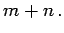
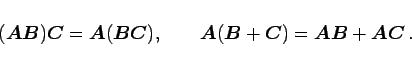
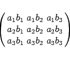
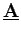
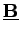
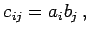
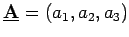
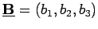

Inhalt Index DeskTop Bronstein

 Lineare Algebra Tensoren Tensoren in kartesischen Koordinaten
Lineare Algebra Tensoren Tensoren in kartesischen Koordinaten


die Komponenten eines Tensors C der Stufe  Man schreibt C = AB und spricht vom Tensorprodukt von A und B. Es gelten Assioziativ- und Distributivgesetz:
|  | (4.73b) |
d.h., das Tensorprodukt stellt die Matrix
|  | (4.74b) |
dar. Diese wird auch als dyadisches Produkt der beiden Vektoren  und  bezeichnet.
| Beispiel | ||
|
Der 2stufige Tensor C von (4.74a) mit  der das Tensorprodukt der beiden Vektoren  und  darstellt, wird über die Indizes i und j verjüngt, so daß man mit
|